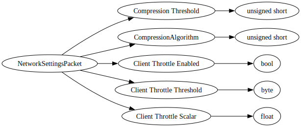

Field Name
Field Notes
Compression Threshold
Determines the smallest size of raw network payload to compress.
NOTE: 0 is disable compression, 1 is compress everything 1 byte or larger (so everything)